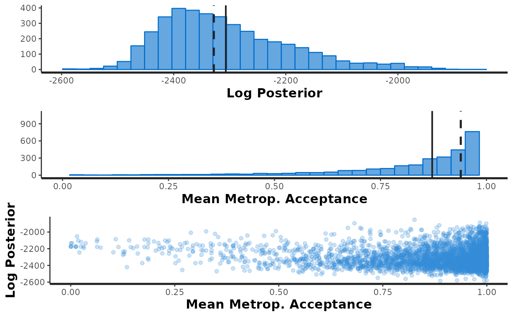

This function estimates the probabilities of superior performance and stability
across environments (marginal output). It also computes the probabilities
of superior performance within environments (conditional output).
prob_sup(
data,
trait,
gen,
env,
reg = NULL,
mod.output,
int,
increase = TRUE,
save.df = FALSE,
interactive = FALSE,
verbose = FALSE
)A data frame containing the phenotypic data
A string. The name of the columns that corresponds to the variable, genotype and environment information, respectively
A string or NULL. If the dataset has information about regions,
reg will be a string with the name of the column that corresponds to the
region information. Otherwise, reg = NULL (default).
An object from the extr_outs() function
A number representing the selection intensity (between 0 and 1)
Logical. Indicates the direction of the selection.
TRUE (default) for increasing the trait value, FALSE otherwise.
Logical. Should the data frames be saved in the work directory?
TRUE for saving, FALSE (default) otherwise.
Logical. Should ggplots be converted into interactive plots?
If TRUE, the function loads the plotly package and uses the plotly::ggplotly()
command.
A logical value. If TRUE, the function will indicate the
completed steps. Defaults to FALSE.
The function returns two lists, one with the marginal probabilities, and
another with the conditional probabilities.
The marginal list has:
df : A list of data frames containing the calculated probabilities:
perfo: the probabilities of superior performance
pair_perfo: the pairwise probabilities of superior performance
stabi: the probabilities of superior stability. When reg is not
NULL, stabi is divided into stabi_gl for the stability across environments, and
stabi_gm for the stability across regions
pair_stabi: the pairwise probabilities of superior stability, which
is also divided into pair_stabi_gl and pair_stabi_gm when reg is not NULL
joint_prob: the joint probabilities of superior performance and stability
plot : A list of ggplots illustrating the outputs:
g_hpd: a caterpillar plot representing the marginal genotypic value of
each genotype, and their respective highest posterior density interval (95% represented by the
thick line, and 97.5% represented by the thin line)
perfo: a bar plot illustrating the probabilities of superior performance
pair_perfo: a heatmap representing the pairwise probability of superior
performance (the probability of genotypes at the x-axis being superior
to those on the y-axis)
stabi: a bar plot with the probabilities of superior stability. Like the data frames,
when reg is not NULL, two different plots are generated, one for the stability across
environments (stabi_gl), and another for the stability across regions (stabi_gm)
pair_stabi: a heatmap with the pairwise probabilities of superior stability
(also divided into two different plots when reg is not NULL). This plot represents
the probability of genotypes at the x-axis being superior
to those on y-axis
joint_prob: a plot with the probabilities of superior performance,
probabilities of superior stability and the joint probabilities of superior
performance and stability.
The conditional list has:
df : A list with:
perfo: a data frame containing the probabilities of superior performance
within environments. It also has the probabilities of superior performance within regions
if reg is not NULL.
pair_perfo: a list with the pairwise probabilities of superior performance
within environments. If reg is not NULL, two lists are generated.
plot : A list with:
perfo: a heatmap with the probabilities of superior performance within
environments. If reg is not NULL, there will be two heatmaps: perfo_env
for the probabilities of superior performance within environments, and perfo_reg
for the same probabilities within regions.
pair_perfo: a list of heatmaps representing the pairwise probability of superior
performance within environments. If reg is not NULL, there will be two lists: pair_perfo_env
for the probabilities of superior performance within environments, and pair_perfo_reg
for the same probabilities within regions. The interpretation is the same as in the
pair_perfo in the marginal list: the probability of genotypes at the x-axis being superior
to those on y-axis.
Probabilities provide the risk of recommending a selection candidate for a target
population of environments or for a specific environment. The function prob_sup()
computes the probabilities of superior performance and the probabilities of superior stability:
Probability of superior performance
Let \(\Omega\) represent the subset of selected genotypes based on their
performance across environments. A given genotype \(j\) will belong to \(\Omega\)
if its genotypic marginal value (\(\hat{g}_j\)) is high or low enough compared to
its peers. prob_sup() leverages the Monte Carlo discretized sampling
from the posterior distribution to emulate the occurrence of \(S\) trials. Then,
the probability of the \(j^{th}\) genotype belonging to \(\Omega\) is the
ratio of success (\(\hat{g}_j \in \Omega\)) events and the total number of sampled events,
as follows:
$$Pr(\hat{g}_j \in \Omega \vert y) = \frac{1}{S}\sum_{s=1}^S{I(\hat{g}_j^{(s)} \in \Omega \vert y)}$$
where \(S\) is the total number of samples (\(s = 1, 2, ..., S\)),
and \(I(g_j^{(s)} \in \Omega \vert y)\) is an indicator variable that can assume
two values: (1) if \(\hat{g}_j^{(s)} \in \Omega\) in the \(s^{th}\) sample,
and (0) otherwise. \(S\) is conditioned to the number of iterations and chains
previously set at bayes_met().
Similarly, the conditional probability of superior performance can be applied to individual environments. Let \(\Omega_k\) represent the subset of superior genotypes in the \(k^{th}\) environment, so that the probability of the \(j^{th} \in \Omega_k\) can calculated as follows:
$$Pr(\hat{g}_{jk} \in \Omega_k \vert y) = \frac{1}{S} \sum_{s=1}^S I(\hat{g}_{jk}^{(s)} \in \Omega_k \vert y)$$
where \(I(\hat{g}_{jk}^{(s)} \in \Omega_k \vert y)\) is an indicator variable mapping success (1) if \(\hat{g}_{jk}^{(s)}\) exists in \(\Omega_k\), and failure (0) otherwise, and \(\hat{g}_{jk}^{(s)} = \hat{g}_j^{(s)} + \widehat{ge}_{jk}^{(s)}\). Note that when computing conditional probabilities (i.e., conditional to the \(k^{th}\) environment or mega-environment), we are accounting for the interaction of the \(j^{th}\) genotype with the \(k^{th}\) environment.
The pairwise probabilities of superior performance can also be calculated across or within environments. This metric assesses the probability of the \(j^{th}\) genotype being superior to another experimental genotype or a commercial check. The calculations are as follows, across and within environments, respectively:
$$Pr(\hat{g}_{j} > \hat{g}_{j^\prime} \vert y) = \frac{1}{S} \sum_{s=1}^S I(\hat{g}_{j}^{(s)} > \hat{g}_{j^\prime}^{(s)} \vert y)$$
or
$$Pr(\hat{g}_{jk} > \hat{g}_{j^\prime k} \vert y) = \frac{1}{S} \sum_{s=1}^S I(\hat{g}_{jk}^{(s)} > \hat{g}_{j^\prime k}^{(s)} \vert y)$$
These equations are set for when the selection direction is positive. If
increase = FALSE, \(>\) is simply switched by \(<\).
Probability of superior stability
Probabilities of superior performance highlight experimental genotypes with high agronomic stability. For ecological stability (invariance), the probability of superior stability is the more adequate. Making a direct analogy with the method of Shukla (1972), a stable genotype is the one that has a low variance of the GEI (genotype-by-environment interaction) effects \([var(\widehat{ge})]\). Using the same probability principles previously described, the probability of superior stability is given as follows:
$$Pr[var(\widehat{ge}_{jk}) \in \Omega \vert y] = \frac{1}{S} \sum_{s=1}^S I[var(\widehat{ge}_{jk}^{(s)}) \in \Omega \vert y]$$
where \(I[var(\widehat{ge}_{jk}^{(s)}) \in \Omega \vert y]\) indicates if \(var(\widehat{ge}_{jk}^{(s)})\) exists in \(\Omega\) (1) or not (0). Pairwise probabilities of superior stability are also possible in this context:
$$Pr[var(\widehat{ge}_{jk}) < var(\widehat{ge}_{j^\prime k}) \vert y] = \frac{1}{S} \sum_{s=1}^S I[var(\widehat{ge}_{jk})^{(s)} < var(\widehat{ge}_{j^\prime k})^{(s)} \vert y]$$
Note that \(j\) will be superior to \(j^\prime\) if it has a lower
variance of the genotype-by-environment interaction effect. This is true regardless
if increase is set to TRUE or FALSE.
The joint probability independent events is the product of the individual probabilities. The estimated genotypic main effects and the variances of GEI effects are independent by design, thus the joint probability of superior performance and stability as follows:
$$Pr[\hat{g}_j \in \Omega \cap var(\widehat{ge}_{jk}) \in \Omega] = Pr(\hat{g}_j \in \Omega) \times Pr[var(\widehat{ge}_{jk}) \in \Omega]$$
The estimation of these probabilities are strictly related to some key questions that constantly arises in plant breeding:
What is the risk of recommending a selection candidate for a target population of environments?
What is the probability of a given selection candidate having good performance if recommended to a target population of environments? And for a specific environment?
What is the probability of a given selection candidate having better performance than a cultivar check in the target population of environments? And in specific environments?
How probable is it that a given selection candidate performs similarly across environments?
What are the chances that a given selection candidate is more stable than a cultivar check in the target population of environments?
What is the probability that a given selection candidate having a superior and invariable performance across environments?
More details about the usage of prob_sup, as well as the other function of
the ProbBreed package can be found at https://saulo-chaves.github.io/ProbBreed_site/.
Dias, K. O. G, Santos J. P. R., Krause, M. D., Piepho H. -P., Guimarães, L. J. M., Pastina, M. M., and Garcia, A. A. F. (2022). Leveraging probability concepts for cultivar recommendation in multi-environment trials. Theoretical and Applied Genetics, 133(2):443-455. doi:10.1007/s00122-022-04041-y
Shukla, G. K. (1972) Some statistical aspects of partioning genotype environmental componentes of variability. Heredity, 29:237-245. doi:10.1038/hdy.1972.87
# \donttest{
mod = bayes_met(data = soy,
gen = "Gen",
env = "Env",
repl = NULL,
reg = "Reg",
res.het = FALSE,
trait = "Y",
iter = 2000, cores = 1, chains = 4)
#> recompiling to avoid crashing R session
#>
#> SAMPLING FOR MODEL 'BayesMET' NOW (CHAIN 1).
#> Chain 1:
#> Chain 1: Gradient evaluation took 0.000745 seconds
#> Chain 1: 1000 transitions using 10 leapfrog steps per transition would take 7.45 seconds.
#> Chain 1: Adjust your expectations accordingly!
#> Chain 1:
#> Chain 1:
#> Chain 1: Iteration: 1 / 2000 [ 0%] (Warmup)
#> Chain 1: Iteration: 200 / 2000 [ 10%] (Warmup)
#> Chain 1: Iteration: 400 / 2000 [ 20%] (Warmup)
#> Chain 1: Iteration: 600 / 2000 [ 30%] (Warmup)
#> Chain 1: Iteration: 800 / 2000 [ 40%] (Warmup)
#> Chain 1: Iteration: 1000 / 2000 [ 50%] (Warmup)
#> Chain 1: Iteration: 1001 / 2000 [ 50%] (Sampling)
#> Chain 1: Iteration: 1200 / 2000 [ 60%] (Sampling)
#> Chain 1: Iteration: 1400 / 2000 [ 70%] (Sampling)
#> Chain 1: Iteration: 1600 / 2000 [ 80%] (Sampling)
#> Chain 1: Iteration: 1800 / 2000 [ 90%] (Sampling)
#> Chain 1: Iteration: 2000 / 2000 [100%] (Sampling)
#> Chain 1:
#> Chain 1: Elapsed Time: 379.574 seconds (Warm-up)
#> Chain 1: 516.32 seconds (Sampling)
#> Chain 1: 895.894 seconds (Total)
#> Chain 1:
#>
#> SAMPLING FOR MODEL 'BayesMET' NOW (CHAIN 2).
#> Chain 2:
#> Chain 2: Gradient evaluation took 0.000669 seconds
#> Chain 2: 1000 transitions using 10 leapfrog steps per transition would take 6.69 seconds.
#> Chain 2: Adjust your expectations accordingly!
#> Chain 2:
#> Chain 2:
#> Chain 2: Iteration: 1 / 2000 [ 0%] (Warmup)
#> Chain 2: Iteration: 200 / 2000 [ 10%] (Warmup)
#> Chain 2: Iteration: 400 / 2000 [ 20%] (Warmup)
#> Chain 2: Iteration: 600 / 2000 [ 30%] (Warmup)
#> Chain 2: Iteration: 800 / 2000 [ 40%] (Warmup)
#> Chain 2: Iteration: 1000 / 2000 [ 50%] (Warmup)
#> Chain 2: Iteration: 1001 / 2000 [ 50%] (Sampling)
#> Chain 2: Iteration: 1200 / 2000 [ 60%] (Sampling)
#> Chain 2: Iteration: 1400 / 2000 [ 70%] (Sampling)
#> Chain 2: Iteration: 1600 / 2000 [ 80%] (Sampling)
#> Chain 2: Iteration: 1800 / 2000 [ 90%] (Sampling)
#> Chain 2: Iteration: 2000 / 2000 [100%] (Sampling)
#> Chain 2:
#> Chain 2: Elapsed Time: 224.18 seconds (Warm-up)
#> Chain 2: 303.235 seconds (Sampling)
#> Chain 2: 527.415 seconds (Total)
#> Chain 2:
#>
#> SAMPLING FOR MODEL 'BayesMET' NOW (CHAIN 3).
#> Chain 3:
#> Chain 3: Gradient evaluation took 0.000549 seconds
#> Chain 3: 1000 transitions using 10 leapfrog steps per transition would take 5.49 seconds.
#> Chain 3: Adjust your expectations accordingly!
#> Chain 3:
#> Chain 3:
#> Chain 3: Iteration: 1 / 2000 [ 0%] (Warmup)
#> Chain 3: Iteration: 200 / 2000 [ 10%] (Warmup)
#> Chain 3: Iteration: 400 / 2000 [ 20%] (Warmup)
#> Chain 3: Iteration: 600 / 2000 [ 30%] (Warmup)
#> Chain 3: Iteration: 800 / 2000 [ 40%] (Warmup)
#> Chain 3: Iteration: 1000 / 2000 [ 50%] (Warmup)
#> Chain 3: Iteration: 1001 / 2000 [ 50%] (Sampling)
#> Chain 3: Iteration: 1200 / 2000 [ 60%] (Sampling)
#> Chain 3: Iteration: 1400 / 2000 [ 70%] (Sampling)
#> Chain 3: Iteration: 1600 / 2000 [ 80%] (Sampling)
#> Chain 3: Iteration: 1800 / 2000 [ 90%] (Sampling)
#> Chain 3: Iteration: 2000 / 2000 [100%] (Sampling)
#> Chain 3:
#> Chain 3: Elapsed Time: 368.341 seconds (Warm-up)
#> Chain 3: 518.299 seconds (Sampling)
#> Chain 3: 886.64 seconds (Total)
#> Chain 3:
#>
#> SAMPLING FOR MODEL 'BayesMET' NOW (CHAIN 4).
#> Chain 4:
#> Chain 4: Gradient evaluation took 0.00055 seconds
#> Chain 4: 1000 transitions using 10 leapfrog steps per transition would take 5.5 seconds.
#> Chain 4: Adjust your expectations accordingly!
#> Chain 4:
#> Chain 4:
#> Chain 4: Iteration: 1 / 2000 [ 0%] (Warmup)
#> Chain 4: Iteration: 200 / 2000 [ 10%] (Warmup)
#> Chain 4: Iteration: 400 / 2000 [ 20%] (Warmup)
#> Chain 4: Iteration: 600 / 2000 [ 30%] (Warmup)
#> Chain 4: Iteration: 800 / 2000 [ 40%] (Warmup)
#> Chain 4: Iteration: 1000 / 2000 [ 50%] (Warmup)
#> Chain 4: Iteration: 1001 / 2000 [ 50%] (Sampling)
#> Chain 4: Iteration: 1200 / 2000 [ 60%] (Sampling)
#> Chain 4: Iteration: 1400 / 2000 [ 70%] (Sampling)
#> Chain 4: Iteration: 1600 / 2000 [ 80%] (Sampling)
#> Chain 4: Iteration: 1800 / 2000 [ 90%] (Sampling)
#> Chain 4: Iteration: 2000 / 2000 [100%] (Sampling)
#> Chain 4:
#> Chain 4: Elapsed Time: 392.687 seconds (Warm-up)
#> Chain 4: 481.544 seconds (Sampling)
#> Chain 4: 874.232 seconds (Total)
#> Chain 4:
#> Warning: There were 76 divergent transitions after warmup. See
#> https://mc-stan.org/misc/warnings.html#divergent-transitions-after-warmup
#> to find out why this is a problem and how to eliminate them.
#> Warning: There were 2873 transitions after warmup that exceeded the maximum treedepth. Increase max_treedepth above 10. See
#> https://mc-stan.org/misc/warnings.html#maximum-treedepth-exceeded
#> Warning: There were 4 chains where the estimated Bayesian Fraction of Missing Information was low. See
#> https://mc-stan.org/misc/warnings.html#bfmi-low
#> Warning: Examine the pairs() plot to diagnose sampling problems
#> Warning: The largest R-hat is 1.19, indicating chains have not mixed.
#> Running the chains for more iterations may help. See
#> https://mc-stan.org/misc/warnings.html#r-hat
#> Warning: Bulk Effective Samples Size (ESS) is too low, indicating posterior means and medians may be unreliable.
#> Running the chains for more iterations may help. See
#> https://mc-stan.org/misc/warnings.html#bulk-ess
#> Warning: Tail Effective Samples Size (ESS) is too low, indicating posterior variances and tail quantiles may be unreliable.
#> Running the chains for more iterations may help. See
#> https://mc-stan.org/misc/warnings.html#tail-ess
outs = extr_outs(data = soy, trait = "Y", gen = "Gen", model = mod,
effects = c('l','g','gl','m','gm'),
nenv = length(unique(soy$Env)),
probs = c(0.05, 0.95),
check.stan.diag = TRUE,
verbose = FALSE)
#> Warning: Removed 2 rows containing missing values (`geom_bar()`).

results = prob_sup(data = soy,
trait = "Y",
gen = "Gen",
env = "Env",
mod.output = outs,
reg = 'Reg',
int = .2,
increase = TRUE,
save.df = FALSE,
interactive = FALSE,
verbose = FALSE)
# }